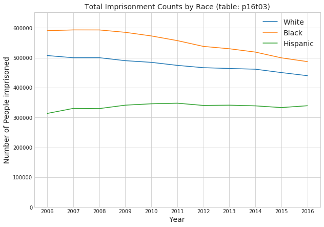
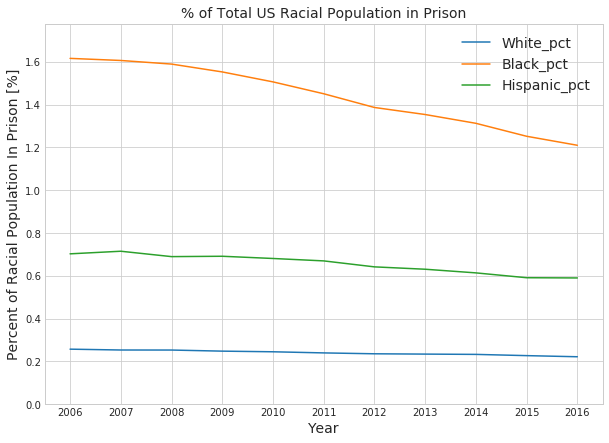

The majority of code and analysis in this post was originally written back in mid-2018 (in this notebook). I’ve consolidated some cells, automated data retrieval, and added cell labels to make things render nicely, but otherwise I’ve left the work as-is. Compared to my current work products, this old code is very messy and unpolished, but like Eric Ma (creator of the networkx graph data analysis package), I believe in showing newer data analysts and scientists I mentor that no one in this field started off with mastery of git, pandas, bash, etc, and that everyone who lasts loves to keep learning and improving.
After I integrate these old posts into this blog, I’ll write an EDA post that starts from scratch using up-to-date data.
1 Imprisonment by Race
This notebook explores the racial breakdown of the 3 largest racial groups in US prisons (from 2006 to 2016): non-Hispanic white people, non-Hispanic black people, and Hispanic people.
In this notebook, I show that, over the entire span of data (2006-2016), black people are the largest racial prison population both in raw numbers and as a proportion of the total same-race US population.
Average Number of Prisoners (from 2006-2016)
Race
Average Number in Prison
Black
551209
White
476136
Hispanic
336500
Average Percent US Racial Population in Prison
Race
% of US Racial Pop. in Prison
Black
1.440 %
White
0.241 %
Hispanic
0.656 %
Change in Average Percent US Racial Population in Prison
Race
Change in % of US Racial Pop. in Prison
Black
-0.406 %
White
-0.035 %
Hispanic
-0.113 %
That is a fairly astonishing. A randomly selected black person is (on average) nearly 6 times as likely to be in prison as a randomly selected white person. There is clearly a statistically significant difference between these rates, so there are clearly more questions to answer.
1.1 Data Source
This data is from file p16t03.csv of the Bureau of Justice Statistics Prisoner Series data.
Imports, styling, and path definitions
import osfrom urllib.request import urlretrieveimport zipfileimport pandas as pdimport numpy as npimport seaborn as snsimport matplotlib.pyplot as pltimport matplotlib.ticker as tickerfrom IPython.core.display import display, HTML%matplotlib inline# Importing modules from a visualization package.# from bokeh.sampledata.us_states import data as states|from bokeh.plotting import figure, show, output_notebookfrom bokeh.models import HoverTool, ColumnDataSourcefrom bokeh.models import LinearColorMapper, ColorBar, BasicTicker# stylingpd.options.display.max_columns =Nonedisplay(HTML("<style>.container { width:100% !important; }</style>"))pd.set_option('display.float_format',lambda x: '%.3f'% x)plt.rcParams['figure.figsize'] =10,10DATA_DIR_PATH = os.path.join("..", "010_crime_and_prisons_p1", 'data')PRISON_DATA_DIR = os.path.join(DATA_DIR_PATH, 'prison')POP_DATA_DIR = os.path.join(DATA_DIR_PATH, "population")
Loading and preprocessing the t03 dataset, Counts by Gender, Race, and Jurisdiction
CSV_PATH = os.path.join(PRISON_DATA_DIR, 'p16t03.csv')race_sex_raw = pd.read_csv(CSV_PATH, encoding='latin1', header=11, na_values=':', thousands=r',')race_sex_raw.dropna(axis=0, thresh=3, inplace=True)race_sex_raw.dropna(axis=1, thresh=3, inplace=True)race_sex_raw.dropna(axis=0, inplace=True)fix =lambda x: x.split('/')[0]race_sex_raw['Year'] = race_sex_raw['Year'].apply(fix)race_sex_raw.columns = [x.split('/')[0] for x in race_sex_raw.columns]race_sex_raw.set_index('Year', inplace=True)display(race_sex_raw)
Total
Federal
State
Male
Female
White
Black
Hispanic
Year
2006
1504598.000
173533.000
1331065.000
1401261.000
103337.000
507100.000
590300.000
313600.000
2007
1532851.000
179204.000
1353647.000
1427088.000
105763.000
499800.000
592900.000
330400.000
2008
1547742.000
182333.000
1365409.000
1441384.000
106358.000
499900.000
592800.000
329800.000
2009
1553574.000
187886.000
1365688.000
1448239.000
105335.000
490000.000
584800.000
341200.000
2010
1552669.000
190641.000
1362028.000
1447766.000
104903.000
484400.000
572700.000
345800.000
2011
1538847.000
197050.000
1341797.000
1435141.000
103706.000
474300.000
557100.000
347800.000
2012
1512430.000
196574.000
1315856.000
1411076.000
101354.000
466600.000
537800.000
340300.000
2013
1520403.000
195098.000
1325305.000
1416102.000
104301.000
463900.000
529900.000
341200.000
2014
1507781.000
191374.000
1316407.000
1401685.000
106096.000
461500.000
518700.000
338900.000
2015
1476847.000
178688.000
1298159.000
1371879.000
104968.000
450200.000
499400.000
333200.000
2016
1458173.000
171482.000
1286691.000
1352684.000
105489.000
439800.000
486900.000
339300.000
Mean annual inmate count by race
print('Average number of {:>8s} people in prison from 2006 to 2016: {:6.0f}' .format('black', race_sex_raw['Black'].mean()))print('Average number of {:>8s} people in prison from 2006 to 2016: {:6.0f}' .format('white', race_sex_raw['White'].mean()))print('Average number of {:>8s} people in prison from 2006 to 2016: {:6.0f}' .format('Hispanic', race_sex_raw['Hispanic'].mean()))
Average number of black people in prison from 2006 to 2016: 551209
Average number of white people in prison from 2006 to 2016: 476136
Average number of Hispanic people in prison from 2006 to 2016: 336500
Plotting annual inmate counts by race
with sns.axes_style("whitegrid"): fig, ax = plt.subplots(figsize=(10,7)) ax.plot(race_sex_raw['White']) ax.plot(race_sex_raw['Black']) ax.plot(race_sex_raw['Hispanic']) ax.set_title('Total Imprisonment Counts by Race (table: p16t03)',fontsize=14) ax.set_xlabel('Year', fontsize=14) ax.set_ylabel('Number of People imprisoned', fontsize=14) ax.legend(fontsize=14) ax.set_ylim([0, 1.1*max([race_sex_raw['White'].max(), race_sex_raw['Black'].max(), race_sex_raw['Hispanic'].max()])])

Looking at this plot of total imprisonment counts, we see that: * At any given time, there are more non-Hispanic black people in prison than any other race. * At any given time, there are more non-Hispanic white people than Hispanic people in prison. * The numbers of imprisoned black people and white people decreased steadily from 2008 to 2016, while the number of imprisoned Hispanic people was been fairly flat over that time.
These numbers are raw counts, so they don’t account for the fact that the fact that these races make up different proportions of the entire US population. This motivates questions like:
What percent of the population of each race is in prison?
To answer that, I’ll have to find population data broken down by race.
1.1.1 Census Data
The Constitution requires that a full, national census is performed every 10 years that reaches every resident on American soil. This data is used to determine how much federal money is allocated to each district for things like schools, roadways, police, etc. and it determines how many congressional representatives will be allocated to each state. With the help of smaller surveys, the US Census bureau makes estimates of populations for the years between censuses.
Loading, filtering, and preprocessing annual national pop. estimates by race and ethnicity
CSV_PATH = os.path.join(POP_DATA_DIR, 'PEP_2016_PEPSR6H_with_ann.csv')race_pop = pd.read_csv(CSV_PATH, header=[1], encoding='latin1')print('\nInitial Data Format:')display(race_pop.head(3))# Only looking for national valuesrace_pop = race_pop[race_pop['Geography'] =='United States']# Eliminating the actual census valuesrace_pop = race_pop[~race_pop['Year'].str.contains('April')]# Eliminating aggregated rowsrace_pop = race_pop[race_pop['Hispanic Origin'] !='Total']# race_pop = race_pop[race_pop['Sex'] != 'Both Sexes'] # for laterrace_pop = race_pop[~race_pop['Sex'].isin(['Male','Female'])]drop_cols = ['Id', 'Id.1', 'Id.2', 'Id2', 'Id.3', 'Geography', 'Sex','Race Alone - American Indian and Alaska Native', 'Race Alone - Asian','Race Alone - Native Hawaiian and Other Pacific Islander']race_pop.drop(drop_cols, axis=1, inplace=True)# Reducing the size of long column namescol_map = {'Race Alone - Black or African American':'black_only_pop','Race Alone - White': 'white_only_pop'}race_pop.rename(col_map, axis=1, inplace=True)print('\n\nData Format after Processing:')display(race_pop.head(3))
Initial Data Format:
Data Format after Processing:
Id
Year
Id.1
Sex
Id.2
Hispanic Origin
Id.3
Id2
Geography
Total
Race Alone - White
Race Alone - Black or African American
Race Alone - American Indian and Alaska Native
Race Alone - Asian
Race Alone - Native Hawaiian and Other Pacific Islander
Two or More Races
0
cen42010
April 1, 2010 Census
female
Female
hisp
Hispanic
0100000US
nan
United States
24858794
21936806
1191984
702309
249346
85203
693146
1
cen42010
April 1, 2010 Census
female
Female
nhisp
Not Hispanic
0100000US
nan
United States
132105418
100301335
19853611
1147502
7691693
246518
2864759
2
cen42010
April 1, 2010 Census
female
Female
tothisp
Total
0100000US
nan
United States
156964212
122238141
21045595
1849811
7941039
331721
3557905
Year
Hispanic Origin
Total
white_only_pop
black_only_pop
Two or More Races
24
July 1, 2010
Hispanic
50754069
44855529
2343053
1392607
25
July 1, 2010
Not Hispanic
258594124
197394319
38015461
5647760
33
July 1, 2011
Hispanic
51906353
45841771
2410490
1445820
Based on the aggregation of the data I pulled, there is a rather vague ‘Two or More Races’ column. The prisoner data I’ve been working with has not differentiated between multiracial people and single-race people, rather, the prison data only breaks races down to non-Hispanic white, non-Hispanic black, and Hispanic. It’s entirely possible for someone to be non-Hispanic, black, and multiracial, which would make it much more difficult and less accurate to use this population data with the prison data. Fortunately, however, the documentation for the prison data] includes footnotes indicating the data for white and black prison populations excludes persons of two or more races, so, conveniently, I must also exclude it.
Engineering counts for Hispanic origin (any race), Non Hispanic White only, and Non Hispanic Black only
Loading, filtering, and preprocessing annual national pop. estimates by race and ethnicity
race_pop0010 = pd.read_excel(pop_file_path, header=None)print('\nInitial Data Format:')display(race_pop0010.head())race_pop0010.dropna(axis=0, thresh=6, inplace=True)race_pop0010.drop([1],axis=1, inplace=True)race_pop0010 = race_pop0010.Trace_pop0010.iloc[0,0] ='Year'race_pop0010.columns = race_pop0010.loc[0]race_pop0010.drop(0, axis=0, inplace=True)race_pop0010.dropna(axis=0, inplace=True)race_pop0010['Year'] = race_pop0010['Year'].astype(int)race_pop0010['Year'] = race_pop0010['Year'].astype(str)race_pop0010.set_index('Year', inplace=True)# Code to help drop columns I'm not interested indrop_cols = []drop_stumps = ['AIAN','Asian','NHPI', 'One Race', 'Two or']for col in race_pop0010.columns:ifany(x in col for x in drop_stumps): drop_cols.append(col)race_pop0010.drop(drop_cols, axis=1, inplace=True)# Code to facilitate merging this DataFrame with theother Population DataFrameboth0010 = race_pop0010.iloc[:,4:7].copy()name_map = {'...White' : 'white_only_pop','...Black' : 'black_only_pop','.HISPANIC' : 'Hispanic_pop'}both0010.rename(name_map, axis=1, inplace=True)both0010 = both0010.astype(int)pop_span = pd.concat([both0010, us_race_pop], join='inner')race_sex_pop = race_sex_raw.join(pop_span)print('\n\nData Format after Processing:')display(race_pop0010.head())
Initial Data Format:
Data Format after Processing:
0
1
2
3
4
5
6
7
8
9
10
11
12
13
0
table with row headers in column A and column ...
NaN
NaN
nan
nan
nan
nan
nan
nan
nan
nan
nan
NaN
NaN
1
Table 2. Intercensal Estimates of the Resident...
NaN
NaN
nan
nan
nan
nan
nan
nan
nan
nan
nan
NaN
NaN
2
Sex, Race, and Hispanic Origin
April 1, 20001
Intercensal Estimates (as of July 1)
nan
nan
nan
nan
nan
nan
nan
nan
nan
April 1, 20102
July 1, 20103
3
NaN
NaN
2000
2001.000
2002.000
2003.000
2004.000
2005.000
2006.000
2007.000
2008.000
2009.000
NaN
NaN
4
BOTH SEXES
281424600
282162411
284968955.000
287625193.000
290107933.000
292805298.000
295516599.000
298379912.000
301231207.000
304093966.000
306771529.000
308745538
309349689
BOTH SEXES
..White
..Black
.NOT HISPANIC
...White
...Black
.HISPANIC
...White
...Black
MALE
..White
..Black
.NOT HISPANIC
...White
...Black
.HISPANIC
...White
...Black
FEMALE
..White
..Black
.NOT HISPANIC
...White
...Black
.HISPANIC
...White
...Black
Year
2000
282162411
228530479
35814706
246500526
195701752
34405800
35661885
32828727
1408906
138443407
112710885
17027514
120101363
95778530
16340639
18342044
16932355
686875
143719004
115819594
18787192
126399163
99923222
18065161
17319841
15896372
722031
2001
284968955.000
230049196.000
36263029.000
247824859.000
195974813.000
34780280.000
37144096.000
34074383.000
1482749.000
139891492.000
113534140.000
17249678.000
120806379.000
95977450.000
16526760.000
19085113.000
17556690.000
722918.000
145077463.000
116515056.000
19013351.000
127018480.000
99997363.000
18253520.000
18058983.000
16517693.000
759831.000
2002
287625193.000
231446915.000
36684650.000
249007573.000
196140540.000
35130061.000
38617620.000
35306375.000
1554589.000
141230559.000
114269447.000
17454795.000
121412514.000
96101267.000
16697032.000
19818045.000
18168180.000
757763.000
146394634.000
117177468.000
19229855.000
127595059.000
100039273.000
18433029.000
18799575.000
17138195.000
796826.000
2003
290107933.000
232717191.000
37066096.000
250058504.000
196232760.000
35438251.000
40049429.000
36484431.000
1627845.000
142428897.000
114897973.000
17631747.000
121910556.000
96155748.000
16839027.000
20518341.000
18742225.000
792720.000
147679036.000
117819218.000
19434349.000
128147948.000
100077012.000
18599224.000
19531088.000
17742206.000
835125.000
2004
292805298.000
234120447.000
37510582.000
251303923.000
196461761.000
35797599.000
41501375.000
37658686.000
1712983.000
143828012.000
115664854.000
17856753.000
122592198.000
96345151.000
17022156.000
21235814.000
19319703.000
834597.000
148977286.000
118455593.000
19653829.000
128711725.000
100116610.000
18775443.000
20265561.000
18338983.000
878386.000
Now that I’ve got a full population data set, I can normalize the prisoner data.
Engineering percent of total group population incarcerated features
Plotting percent of total group population incarcerated by year
with sns.axes_style("whitegrid"): fig, ax = plt.subplots(figsize=(10,7)) ax.plot(race_sex_pop['White_pct']) ax.plot(race_sex_pop['Black_pct']) ax.plot(race_sex_pop['Hispanic_pct']) ax.set_title('% of Total US Racial Population in Prison',fontsize=14) ax.set_xlabel('Year', fontsize=14) ax.set_ylabel('Percent of Racial Population In Prison [%]', fontsize=14) ax.legend(fontsize=14) ax.set_ylim([0, 1.1*max([race_sex_pop['White_pct'].max(), race_sex_pop['Black_pct'].max(), race_sex_pop['Hispanic_pct'].max()])])

Descriptive stats for percent of group incarcerated
print('Average percentage of total {:>8s} population in prison: {:0.3f}%' .format('black', race_sex_pop['Black_pct'].mean()))print('Average percentage of total {:8s} population in prison: {:0.3f}%' .format('Hispanic', race_sex_pop['Hispanic_pct'].mean()))print('Average percentage of total {:>8s} population in prison: {:0.3f}%' .format('white', race_sex_pop['White_pct'].mean()))print('Change in percentage of total {:>8s} population in prison between 2006 to 2016: {:0.3f}%' .format('black', race_sex_pop['Black_pct']['2016'] - race_sex_pop['Black_pct']['2006']))print('Change in percentage of total {:>8s} population in prison between 2006 to 2016: {:0.3f}%' .format('Hispanic', race_sex_pop['Hispanic_pct']['2016'] - race_sex_pop['Hispanic_pct']['2006']))print('Change in percentage of total {:>8s} population in prison between 2006 to 2016: {:0.3f}%' .format('white', race_sex_pop['White_pct']['2016'] - race_sex_pop['White_pct']['2006']))
Average percentage of total black population in prison: 1.440%
Average percentage of total Hispanic population in prison: 0.656%
Average percentage of total white population in prison: 0.241%
Change in percentage of total black population in prison between 2006 to 2016: -0.406%
Change in percentage of total Hispanic population in prison between 2006 to 2016: -0.113%
Change in percentage of total white population in prison between 2006 to 2016: -0.035%
That’s an extremely large difference. A randomly selected black person is nearly 6 times more likely to be in prison than a randomly selected white person and more than twice as likely as a randomly selected Hispanic person.
That motivates the question: Why is there such a large difference between these populations?
To investigate that question, it would be useful to investigate other questions, such as: * Does the criminal justice system treat different racial groups differently? * Is the average quality of education comparable for different racial populations? * Is the distribution of quality of education comparable for different racial populations? * Is the average quality of employment opportunity comparable for different racial populations? * Is the distribution of quality of employment opportunities comparable for different racial populations? * Is there a causal relationship between the pervasive housing segregation across the US and these disparities? * What drove the significant reduction in the incarcerated proportion of black Americans from 2006-2016?